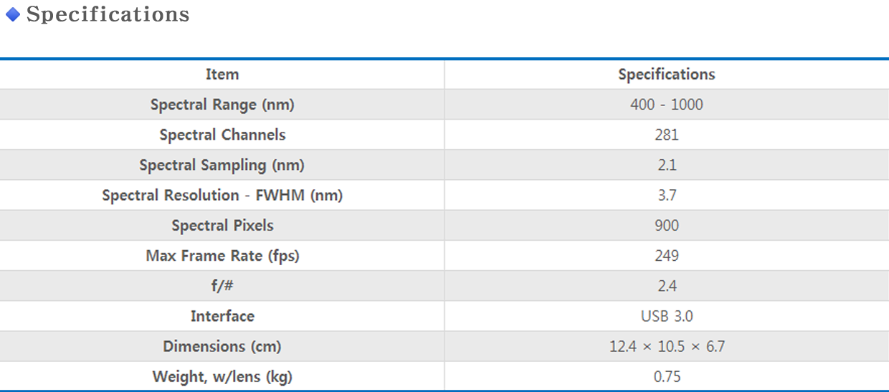
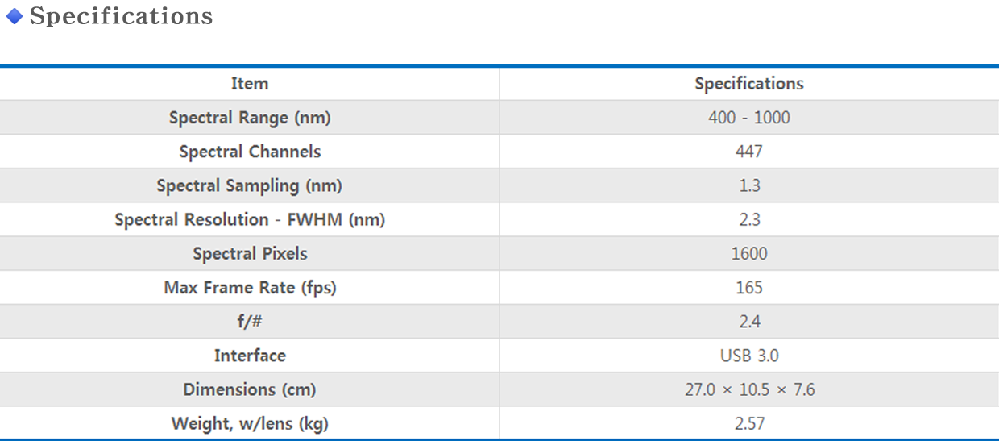
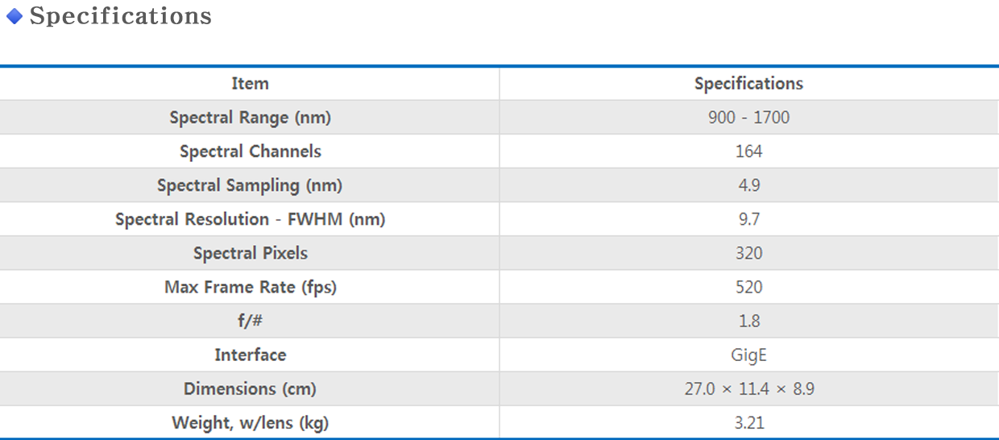
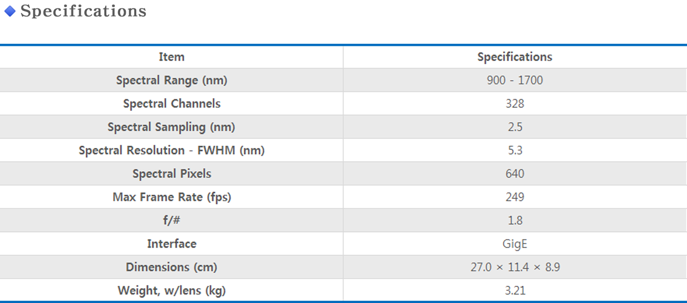
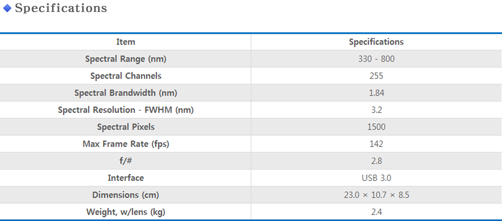
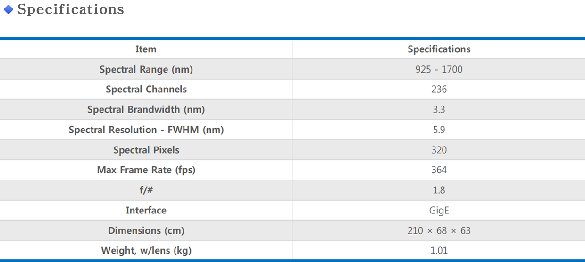
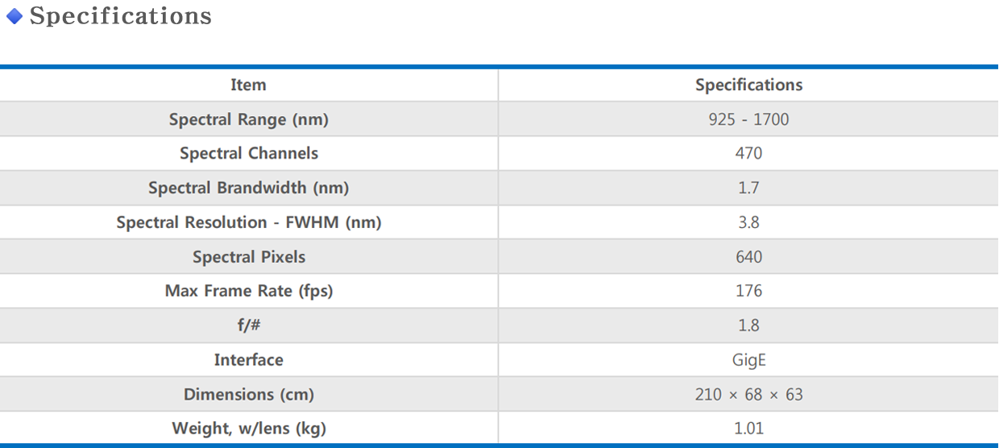

- Spectral Camera
Pika XC2
Pika IR
Pika IR+
Pika UV
Pika IR-L
Pika IR-L+
Pika L
• The Pika L hyperspectral camera is a cost-effective, lightweight, small Visible+Near-Infrared (VNIR) imager covering the 400 - 1000 nm spectral range.
• The Pika L weighs only 0.6 kg, making it ideal for drone-based remote sensing applications (see our webpage on the airborne hyperspectral system for details).
• The Pika L can also be used with the benchtop system for laboratory measurements and the field system for terrestrial-based outdoor measurements.
• All Resonon hyperspectral cameras, including the Pika L, use a pushbroom (i.e. line-scan) approach to imaging.
Features
• Spectral Range: 400-1000nm
• 900 Spatial pixels Per Line
• 281 Spectral Channels Per Line
• High Speed(249 fps@full frame)
• lightweight, Compact VNIR hyperspectral camera
specifications

Pika XC2
• The Pika XC2 hyperspectral camera is Resonon's highest precision Visible+Near-Infrared (VNIR) imager covering the 400 - 1000 nm spectral range. It has higher spatial and spectral resolutions than the Pika L hyperspectral camera.
• The Pika XC2 is ideal for researchers who need high-precision laboratory data.
The Pika XC2 can be used with any of our laboratory, outdoor, and remote sensing hyperspectral imaging systems.
• Because of its higher precision the Pika XC2 generates very large datasets. Resonon's hyperspectral software provides hardware and software binning capabilities in both the spatial and spectral dimensions, enabling smaller data volume when reduced resolutions are acceptable.
• All Resonon hyperspectral cameras, including the Pika XC2, use a pushbroom (i.e. line-scan) approach to imaging.
Features
• Spectral Range: 400-1000nm
• 1600 Spatial pixels Per Line
• 447 Spectral Channels Per Line
• High Speed(165 fps@full frame)
• High-precision VNIR Hyperspectral Camera
specifications

Pika IR
• The Pika IR hyperspectral camera is Resonon's most affordable Near Infrared imager covering the 900 - 1700 nm spectral range.
It is capable of high speeds (520 fps) and has excellent image quality.
• The Pika IR is an inexpensive option for researchers who need infrared spectral imaging data. It can be used with our laboratory benchtop system, outdoor system, and airborne remote sensing system. If very high precision data is required then the Pika IR+ is recommended.
• All Resonon hyperspectral cameras, including the Pika IR, use a pushbroom (i.e. line-scan) approach to imaging.
Features
• Spectral Range: 900-1700nm
• 320 Spatial pixels Per Line
• 164 Spectral Channels Per Line
• High Speed(520 fps@full frame)
• High-Speed Infrared hyperspectral camera
specifications

Pika IR+
• The Pika IR+ hyperspectral camera is Resonon's high-precision Near Infrared (NIR) imager covering the 900 - 1700 nm spectral range. It has superior image quality, with higher spatial and spectral resolutions than the Pika IR hyperspectral camera.
• It has superior image quality with higher spatial and spectral resolutions than the Pika IR hyperspectral camera.
The Pika IR+ is ideal for researchers who need high-precision infrared data.
• The Pika IR+ can be used with any of our laboratory, outdoor, and remote sensing hyperspectral imaging systems.
• All Resonon's hyperspectral cameras, including the Pika IR+, use a pushbroom (i.e. line-scan) approach to imaging.
Features
• Spectral Range: 900-1700nm
• 640 Spatial pixels Per Line
• 328 Spectral Channels Per Line
• High Speed(249 fps@full frame)
• High-precision Infrared hyperspectral camera
specifications

Pika UV
• The Pika UV ultraviolet hyperspectral camera covers the 330 - 800 nm spectral range, further into the UV than any commercially available hyperspectral imager.
It includes a specially designed objective lens optimized for ultraviolet imaging.
• The Pika UV can be used with our laboratory benchtop system, outdoor system, and airborne remote sensing system.
Because standard halogen lights do not emit much energy below 355 nm, in the benchtop system an additional ultraviolet light is used to augment the standard halogen line light.
• All Resonon hyperspectral cameras, including the Pika UV, use a pushbroom (i.e. line-scan) approach to imaging.
Features
• Spectral Range: 330-800nm
• 1500 Spatial pixels Per Line
• 255 Spectral Channels Per Line
• High Speed(142 fps@full frame)
• ultraviolet hyperspectral camera
specifications

Pika IR-L
• The Pika IR-L is a line-scan hyperspectral camera that covers the
near-infrared spectral range (925 - 1700 nm).
• The Pika IR-L is a high-speed, light-weight infrared imager, ideal for remote sensing applications.
Features
• Spectral Range: 925-1700 nm
• 320 Spatial Pixels Per Line
• 236 Spectral Channels Per Line
• High Speed (364 fps max.)
specifications

Pika IR-L+
• The Pika IR-L+ is a line-scan hyperspectral camera that covers
the near-infrared spectral range (925 - 1700 nm).
• The Pika IR-L+ is a high-precision, light-weight infrared imager, ideal for those who need the best remote sensing data.
Features
• Spectral Range: 925-1700 nm
• 640 Spatial Pixels Per Line
• 470 Spectral Channels Per Line
• 3.8 nm Spectral Resolution (FWHM)
specifications
